Выявленная средняя линия нормируемого отверстия должна быть расположена между двумя параллельными плоскостями, которые находятся друг от друга на расстоянии 0,1 и параллельны базовой оси А. Кроме того, эти плоскости, согласно указанным направлению соединительной линии рамки допуска (соответствует направлению ширины поля допуска) и вторичной базе, см. рисунок (a) ниже, или согласно указанному знаку ориентирующей плоскости, см. рисунок (b) ниже, должны быть параллельны базовой плоскости В.
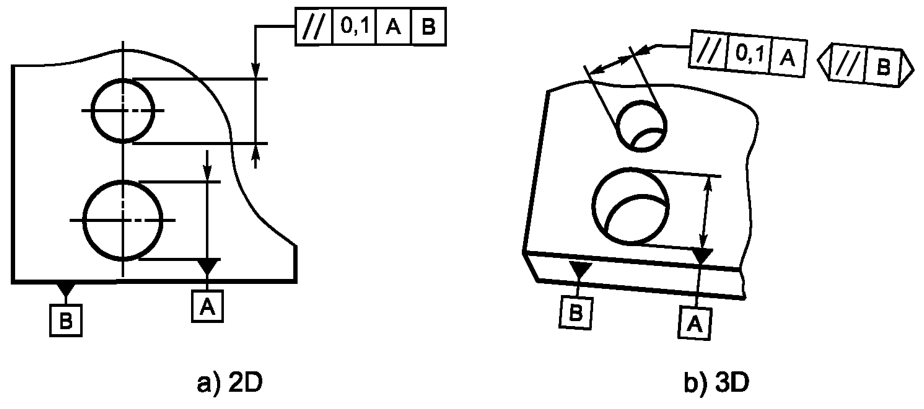Поле допуска ограничено двумя параллельными плоскостями, расстояние между которыми равно значению допуска t. Плоскости параллельны базам А и В (ориентация ширины поля допуска - перпендикулярно базе В), см. рисунок ниже
а - база А; b - база B
Выявленная средняя линия нормируемого отверстия должна быть расположена между двумя параллельными плоскостями, которые находятся друг от друга на расстоянии 0,1 и параллельны базовой оси А. Кроме того, эти плоскости, согласно указанным направлению соединительной линии рамки допуска (соответствует направлению ширины поля допуска) и вторичной базе, см. рисунок (b) ниже, или согласно указанному знаку ориентирующей плоскости, см. рисунок (b) ниже, должны быть перпендикулярны базовой плоскости В.
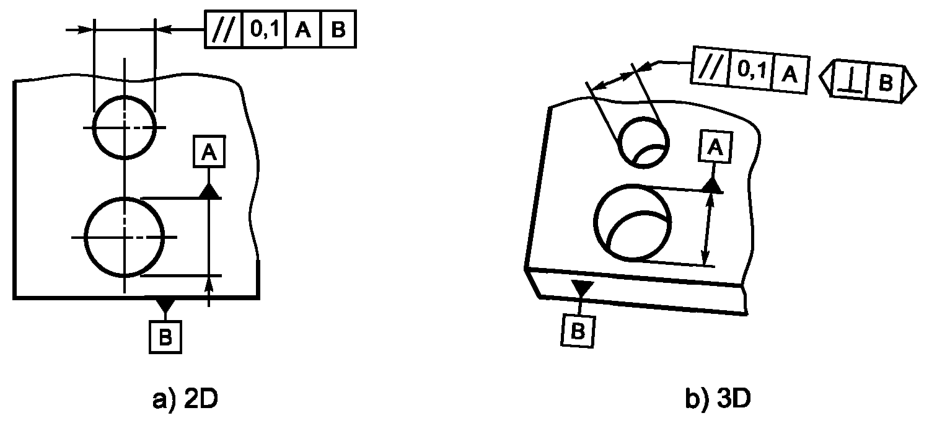Поле допуска ограничено двумя параллельными плоскостями, расстояние между которыми равно значению допуска t. Плоскости параллельны базе А и перпендикулярны базе В (ориентация ширины поля допуска - параллельно базе В), см. рисунок ниже

Выявленная средняя линия нормируемого отверстия должна быть расположена между двумя парами параллельных плоскостей, которые параллельны базовой оси А. При этом расстояния между плоскостями равны 0,2 (в первой паре) и 0,1 (во второй паре). Кроме того, согласно указанным направлениям соединительных линий рамок допуска (совпадают с направлениями ширины соответствующих полей допуска) и вторичным базам, см. рисунок (b) ниже, или согласно указанным знакам ориентирующих плоскостей, см. рисунок (b) ниже, первая пара плоскостей должна быть перпендикулярна, а вторая - параллельна базовой плоскости В.
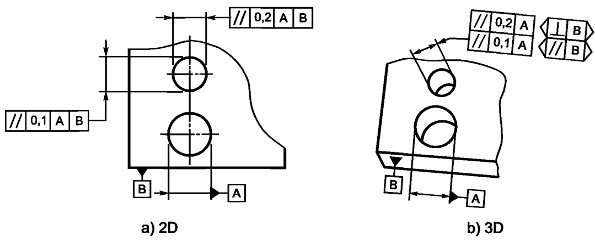Поле допуска ограничено двумя парами параллельных плоскостей, которые параллельны базовой оси А, а расстояния между плоскостями равны 0,2 (в первой паре) и 0,1 (во второй паре). Кроме того, первая пара плоскостей перпендикулярна, а вторая - параллельна базовой плоскости В, см. рисунок ниже
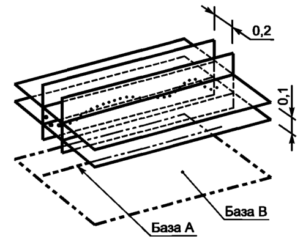Выявленная средняя линия нормируемого отверстия должна быть расположена между двумя парами параллельных плоскостей, которые параллельны базовой оси А. При этом расстояния между плоскостями равны 0,2 (в первой паре) и 0,1 (во второй паре). Кроме того, согласно указанным направлениям соединительных линий рамок допуска (совпадают с направлениями ширины соответствующих полей допуска) и вторичным базам, см. рисунок (b) ниже, или согласно указанным знакам ориентирующих плоскостей, см. рисунок (b) ниже, первая пара плоскостей должна быть перпендикулярна, а вторая - параллельна базовой плоскости В.

Поле допуска ограничено цилиндром, диаметр которого равен значению допуска t (если перед значением допуска указан знак«ф»), а ось - параллельна базовой оси, см. рисунок ниже
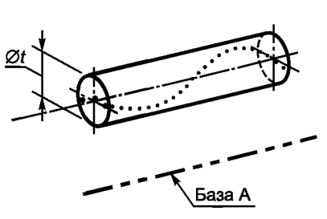Выявленная средняя линия нормируемого отверстия должна быть расположена между двумя параллельными плоскостями, которые находятся друг от друга на расстоянии 0,01 и параллельны базовой плоскости В, см. рисунок ниже
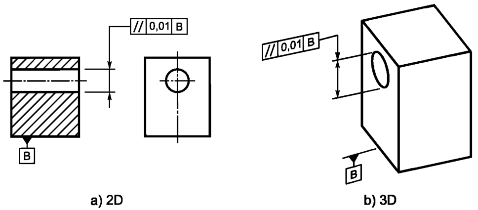Поле допуска ограничено двумя параллельными плоскостями, которые расположены друг от друга на расстоянии, равном значению допуска t, и параллельны базовой плоскости, см. рисунок ниже
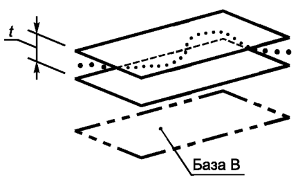Выявленная линия на нормируемой поверхности в любой плоскости параллельной базовой плоскости В должна быть расположена между двумя параллельными линиями, которые находятся друг от друга на расстоянии 0,02 и параллельны базовой плоскости В, см. рисунок ниже
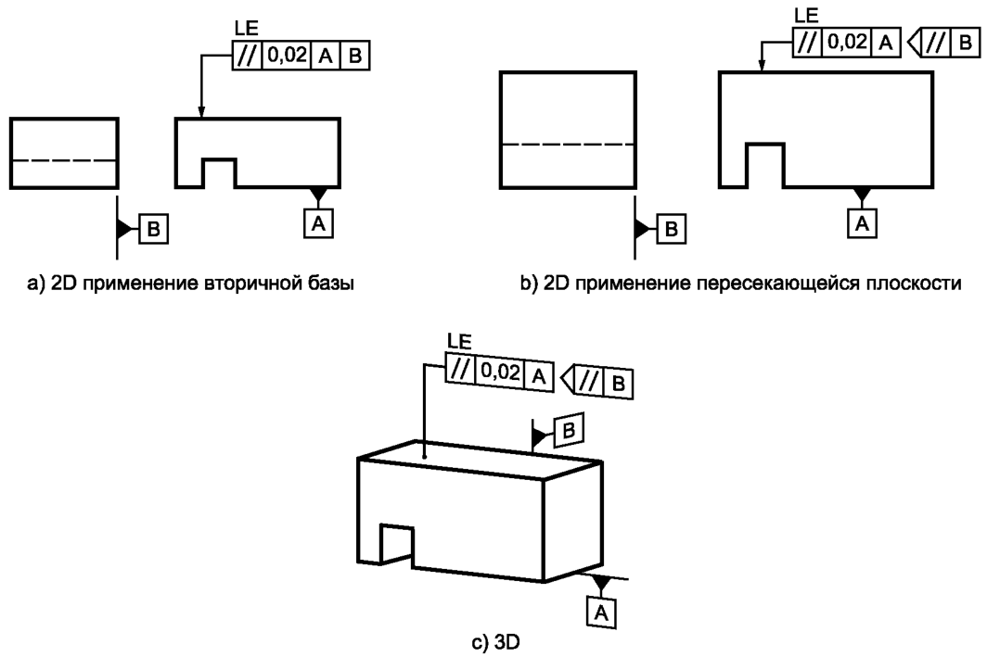Поле допуска ограничено двумя, лежащими в любой параллельной базе В плоскости, параллельными линиями, которые расположены друг от друга на расстоянии, равном значению допуска t, и параллельны базовой плоскости А, см. рисунок ниже
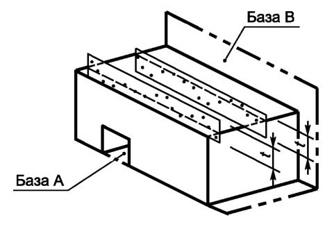Выявленная нормируемая поверхность должна быть расположена между двумя параллельными плоскостями, которые находятся друг от друга на расстоянии 0,1 и параллельны базовой оси С, см. рисунок ниже
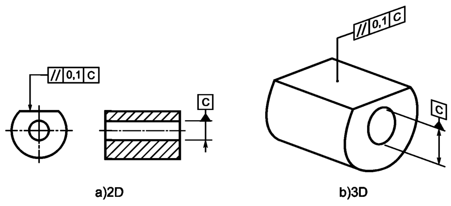Поле допуска ограничено любыми двумя параллельными плоскостями, которые расположены друг от друга на расстоянии, равном значению допуска t, и параллельны базовой оси, см. рисунок ниже
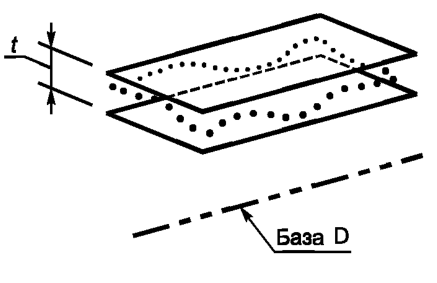Выявленная нормируемая поверхность должна быть расположена между двумя параллельными плоскостями, которые находятся друг от друга на расстоянии 0,01 и параллельны базовой плоскости D, см. рисунок ниже
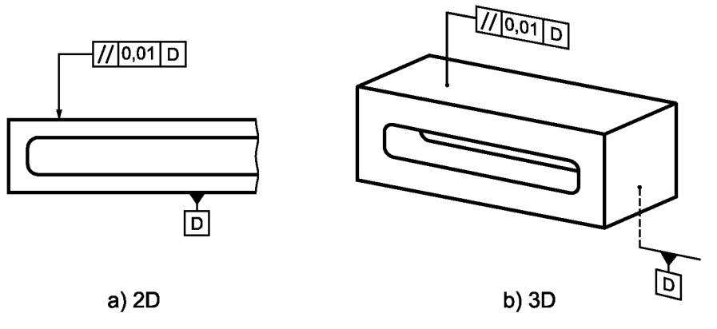Поле допуска ограничено двумя параллельными плоскостями, которые расположены друг от друга на расстоянии, равном значению допуска t, и параллельны базовой плоскости, см. рисунок ниже
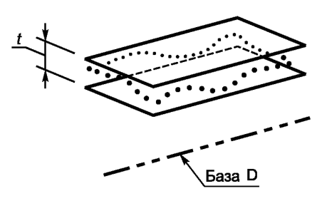